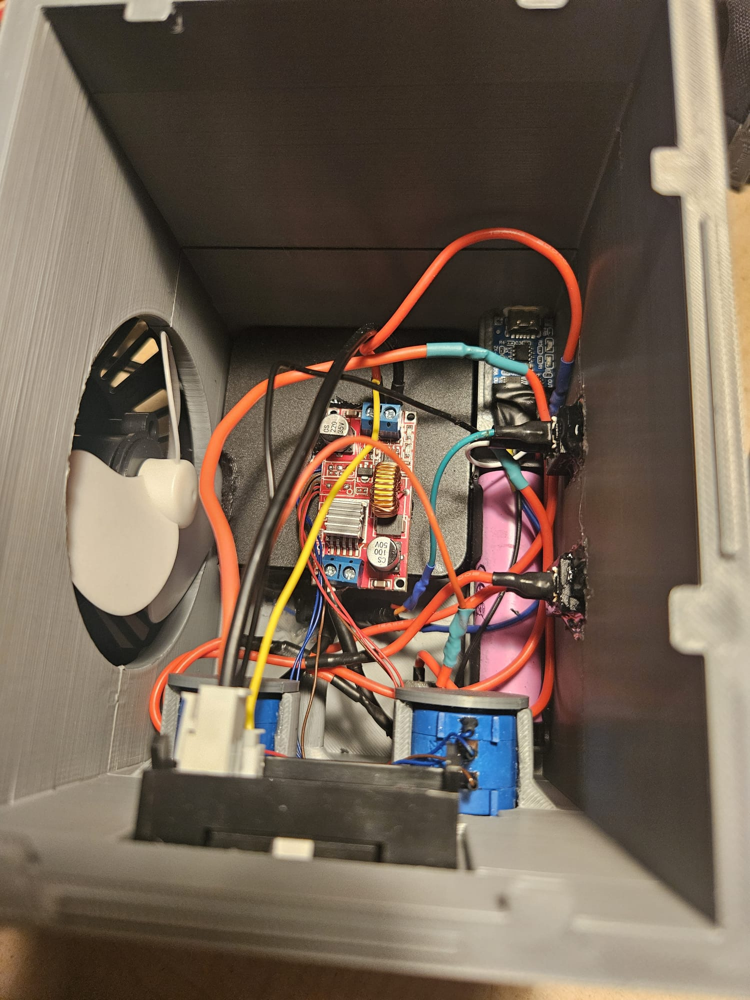

Sheet 4: Hardware / Project Detail
Smart Bench Power Supply
A custom-built, high-precision laboratory bench power supply designed for electronics prototyping and component testing. Engineered from scratch combining custom 3D CAD modeling, buck converter power regulation, and integrated thermal management.
Key Features & Technical Details
- High-Precision Regulation: Utilizes multi-turn potentiometers integrated with buck converter circuits to deliver fine, highly precise voltage and amperage adjustments with minimal output ripple.
- Custom 3D-Printed Enclosure: Designed in Fusion 360 to ensure zero-clearance component mounting, internal structural rigidity, and clean external panel geometry.
- Effective Thermal Management: Features dedicated internal airflow channels and active cooling heatsinks to maintain optimal operating temperatures under high load conditions.
- Real-Diagnostics: Dual digital LED panel meters provide continuous visual feedback for voltage and current output levels.
Internal Wiring & Assembly
Below is an internal view showing the component layout, hand-soldered power rails, buck regulation module, and internal cable management inside the enclosure:

* Visual Note: Update the 'src' attribute with your interior image path (e.g., images/power_supply_interior.jpg)
Title Project: Smart Bench Power Supply
Drawn by _Ömer
Rev A / 2026